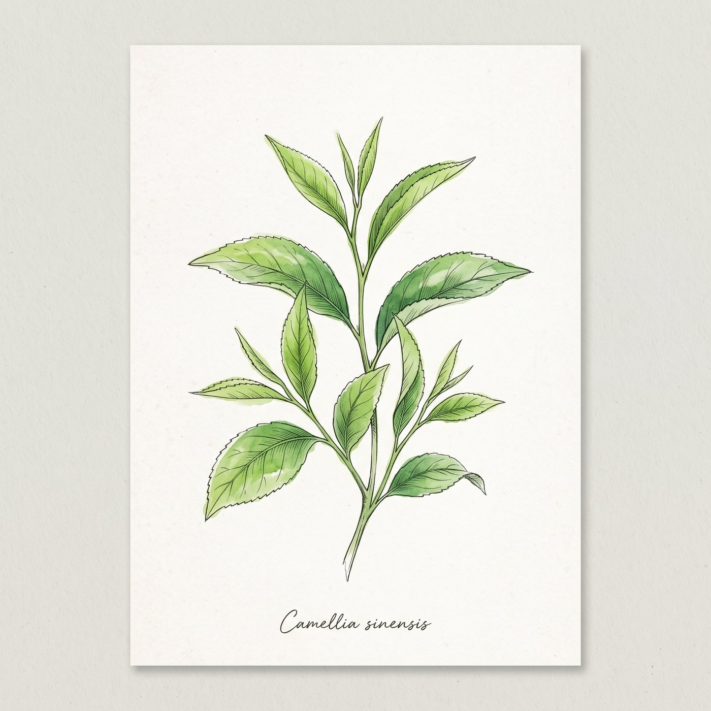

圓霖茶葉精選高山烏龍、紅茶、綠茶與季節茶款，提供各款茶品的特色、規格與現貨資訊，方便挑選適合日常品飲的茶。

A QUIETER CUP, EVERY DAY
好茶不必繁複，只要風味清楚，每一天都喝得自在。
02 / A JOURNEY THROUGH TEA
往下捲，畫面也會自然往下走。沿著三款茶的風味，找到今天想泡的那一盞。
SELECTED TEA / 01—04
TEA BY CHARACTER